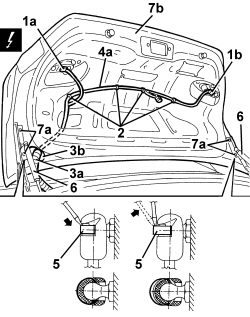

7210E54 BOOT
- Path
- Procedures > 72 PANELS AND FRAMES > 7210 REMOVING-REFITTING > 7210E EXTERNAL PARTS > 7210E54 BOOT
- Kind
- repair procedure (removal / refitting; the operation number is the code)
- Applies to
- all engines; all production periods
- Interactive page
- https://sloeber94.github.io/elrnDB/#/939011401
Applies to: all engines; all production periods
 Removing
Removing
 Refitting
RefittingOp. 7025B18 BOOT LID LINING - R+R
Op. 7025B38 BOOT LID LOCK - R+R
1. Detach electrical connections (1a, 1b).
Description | Component |
|---|---|
LEFT REAR LIGHT CLUSTER (MOVING SECTION ON BOOT LID) | See F035 LEFT REAR LIGHT CLUSTER (MOVING SECTION ON BOOT LID) |
RIGHT REAR LIGHT CLUSTER (MOVING SECTION ON BOOT LID) | See F036 RIGHT REAR LIGHT CLUSTER (MOVING SECTION ON BOOT LID) |
2. Release the wiring retainers.
3. Release cable duct (3a) from boot lid opening (3b).
4. Extract wiring (4a) from the boot lid passing through opening (3b).
5. Support the boot lid appropriately and, using a screwdriver, release the lifting devices upper retaining clips (without detaching them).
6. Lower the lift devices.
7. Undo bolts (7a) on hinges and recover boot lid (7b).

Applies to: all engines; all production periods
Refitting
Removing- Check that the boot lid is not damaged.
- Position the boot lid and screw in the hinge fixing bolts (without tightening them).
- Attach the support devices and fit the clips.
- Reinsert the wiring into the boot lid.
- Fit the bulkhead coupling to hole in the boot lid.
- Connect the wiring retainers.
- Secure the electrical connections.
Op. 7025B38 BOOT LID LOCK - R+R
Op. 7025B18 BOOT LID LINING - R+R
- Check that the lights and dismantled parts are working.
Topics linked from this page (5)
- 7025B10 BOOT LID - SQUARE
- 7025B18 BOOT LID LINING - R+R
- 7025B38 BOOT LID LOCK - R+R
- F035 LEFT REAR LIGHT CLUSTER (MOVING SECTION ON BOOT LID)
- F036 RIGHT REAR LIGHT CLUSTER (MOVING SECTION ON BOOT LID)